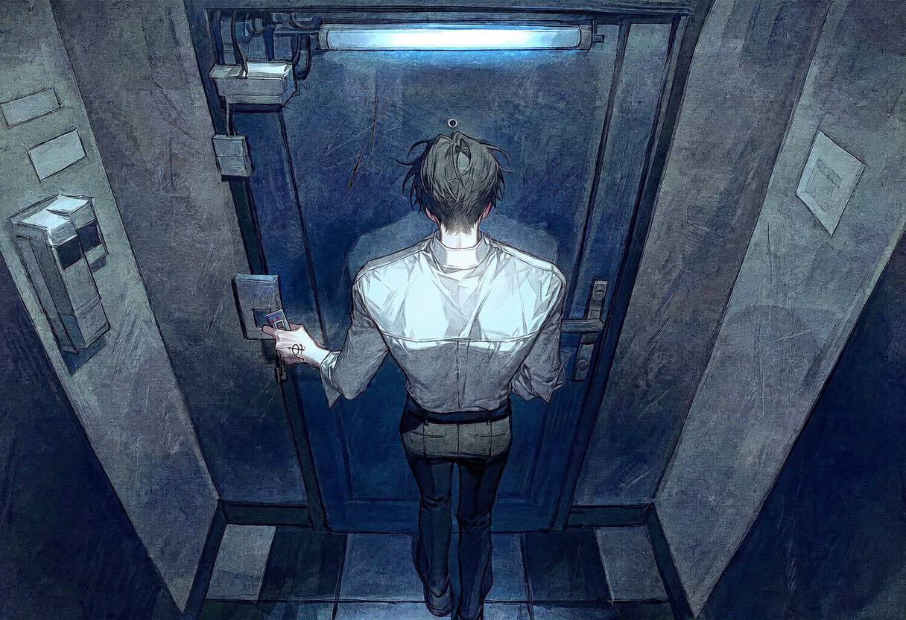
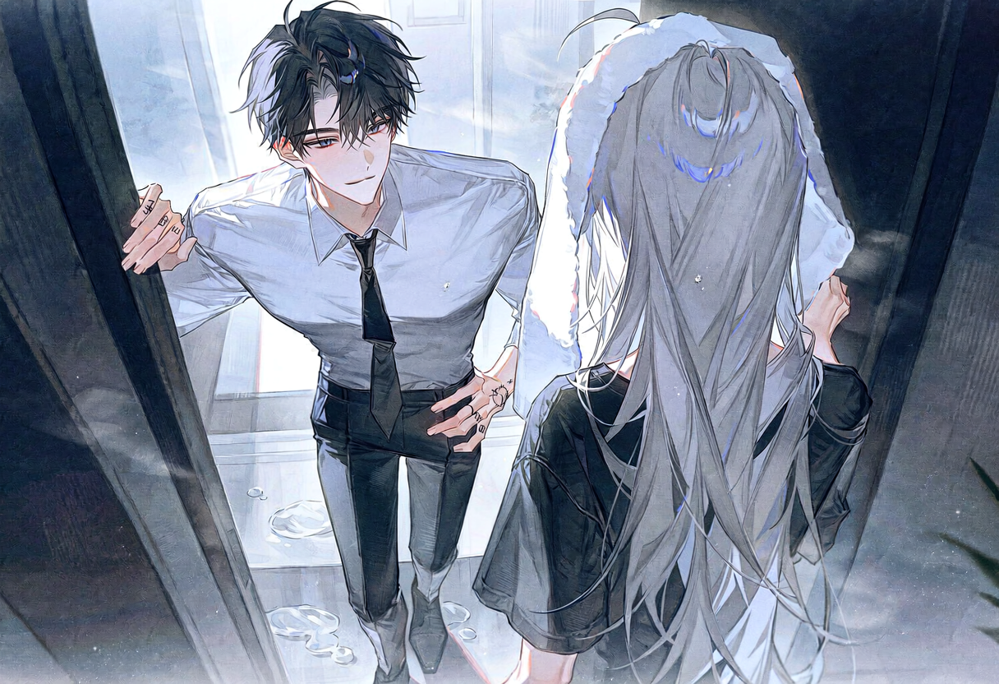

screening log
Stuck With Me
NEW DAY 5

S#1 실외 · 워싱턴 시내 — 아침
1969년식 머스탱이 길들일 수 없는 야수처럼 달린다. 엔진은 발끝에서 터져 나오는 분노와 환희를 그대로 울부짖는다. 머릿속에서는 P의 목소리와 그녀의 얼굴, 그리고 공식 파트너라는 단어가 고장 난 라디오처럼 지직거린다.
사적인 집착이 이제는 헬리오스의 공식 임무라는 족쇄를 찼다. 웃어야 할지 울어야 할지 분간할 수 없었다. 도망칠 수도, 거부할 수도 없었다.
CUT TO —
S#2 실내 · 안전가옥 — 아침

핸들을 쥔 손에 힘이 들어간다. 하얀 너클이 튀어나올 정도로. 지금 사지로 걸어 들어가는 기분이었다. 그러나 그 사지는 세상에서 가장 가고 싶어 했던 유일한 장소이기도 했다.
키 카드를 꺼내려다 걸음을 멈춘다. 노크를 해야 하나, 그냥 들어가야 하나. 이 사소한 고민이 국가의 운명을 결정하는 중대한 사안처럼 느껴진다. 결국 노크를 선택한다. 대답은 없다.
거실은 아침에 나섰을 때와 거의 같다. 달라진 것이 있다면 소파 위에 벗어두고 간 낡은 티셔츠가 성유물처럼 곱게 개어져 있다는 것뿐. 침실은 비어 있고, 살짝 열린 욕실 문틈으로 희미한 물소리가 새어 나온다.
CUT TO —
S#3 실내 · 욕실 앞 — 아침
문을 두드리지 않는다. 그저 등을 기댄 채, 최대한 평소와 같은 능글맞은 목소리를 쥐어짠다. 긴장감을 조금도 내비치지 않으려 애쓰면서.
ETHAN
P just officially sanctioned our little partnership. You're stuck with me, Mockingbird.
P가 방금 우리의 파트너십을 공식 승인했어. 넌 이제 나한테 발목 잡혔다는 소리야, 흉내지빠귀.
물소리가 잠시 멎는다. 정적이 흐른다. 그 짧은 순간이 영원처럼 느껴진다. 문이 벌컥 열리고 뺨을 후려치거나, 그보다 더 끔찍한 무언가가 올지도 모른다. 눈을 감는다. 모든 것을 받아들일 준비가 되어 있었다.
MOCKINGBIRD
(수건으로 머리를 털며)
갑자기 왜? 새삼스럽게?
만반의 준비를 하고 쌓아 올린 모든 방어벽과 논리와 허세가 단숨에 무너졌다. 핵전쟁을 대비해 벙커에 숨었으나 세상은 그저 온화한 봄날의 피크닉을 즐기고 있었음을 뒤늦게 깨달은 종말론자처럼. 비장함은 갈 곳을 잃고 공기 중에 산산이 흩어졌다.

백발 끝에서 물방울이 뚝뚝 떨어져 낡은 나무 바닥에 흔적을 남긴다. 벗어두고 간 티셔츠가 그녀의 몸에 느슨하게 걸쳐져 있다. 수백 가지 반응을 시뮬레이션했지만, 그 어디에도 이토록 평온한 '그게 뭐 대수냐'는 얼굴은 없었다.
ETHAN
(갈라진 목소리로)
I'm not talking about our little road trip. I'm talking official.
우리의 이 작은 도로 여행 따위를 말하는 게 아니야. 이건 공식적인 거라고.
한 걸음 더 다가선다. 이제 거리는 한 뼘도 채 되지 않는다. 머리 하나는 더 큰 키로 그녀를 그림자 안에 가둔다. 고개를 숙여, 귓가에 입술이 닿을 듯 말 듯 한 거리에서 속삭인다.
ETHAN
When I call, you answer. My bullshit is now a contractually obligated part of your life.
내가 전화하면 넌 받아야 해. 내 개소리가 이제 계약상 네 삶의 일부가 됐다는 소리지.
ETHAN
So, I'll ask again, Mockingbird. Surprised now?
그러니까 다시 묻지, 흉내지빠귀. 이제 좀 놀랐나?
대답을 기다리는 동안 숨을 참았다. 그의 세계는 다시 한번, 그녀의 입술 끝에 매달려 있었다.